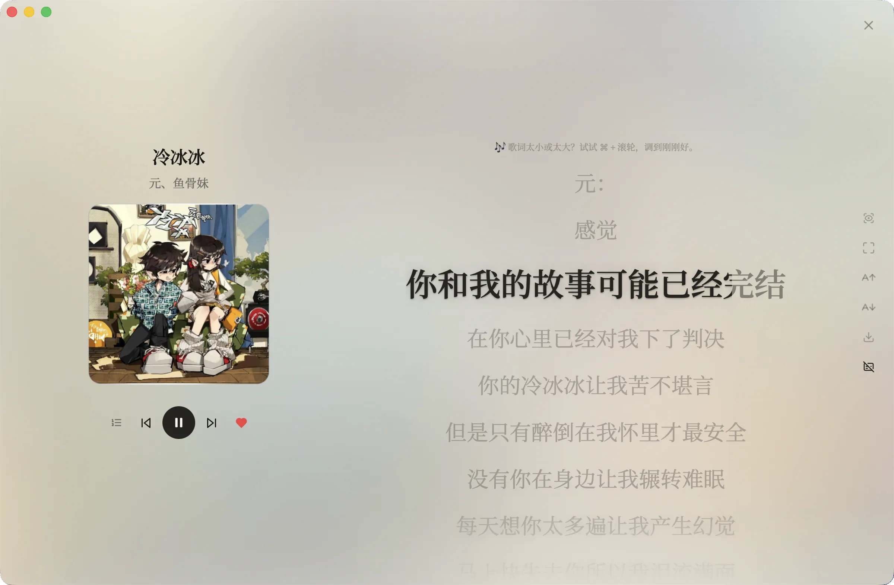
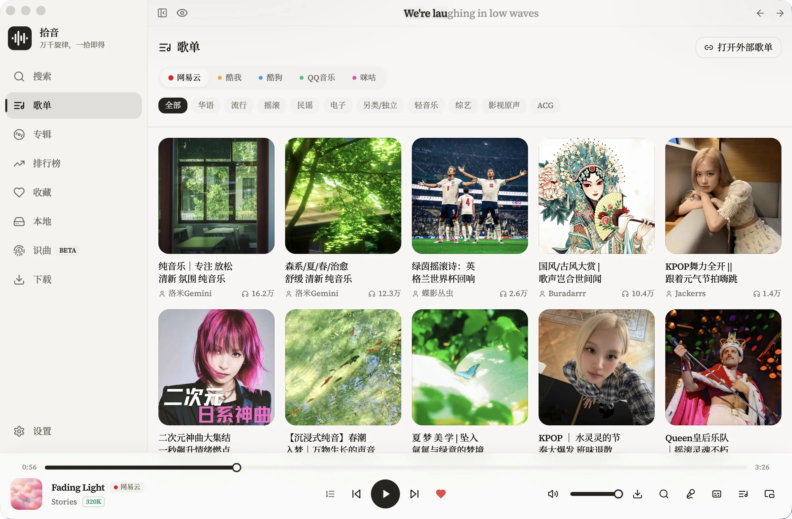
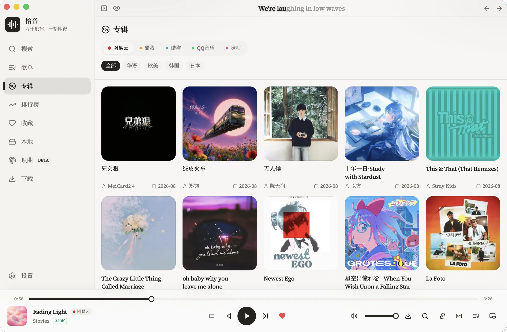
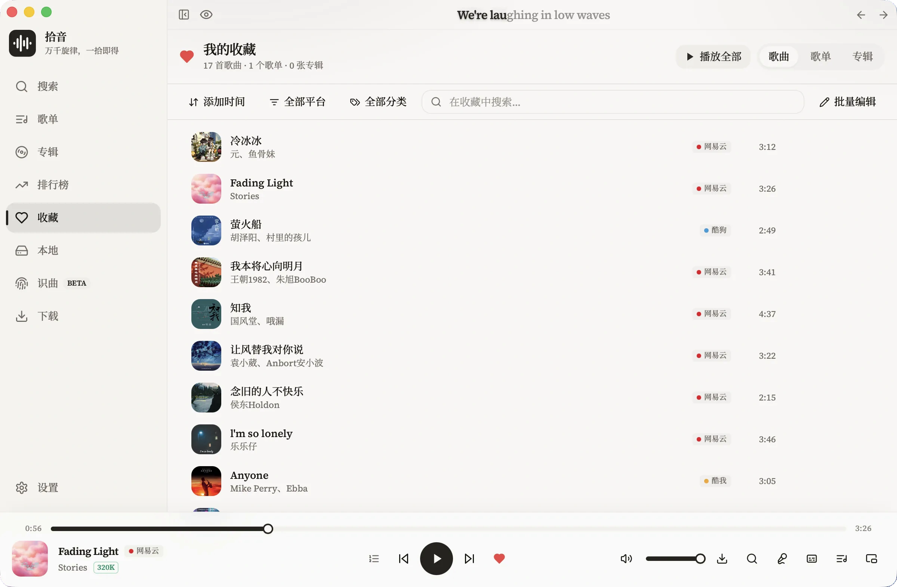
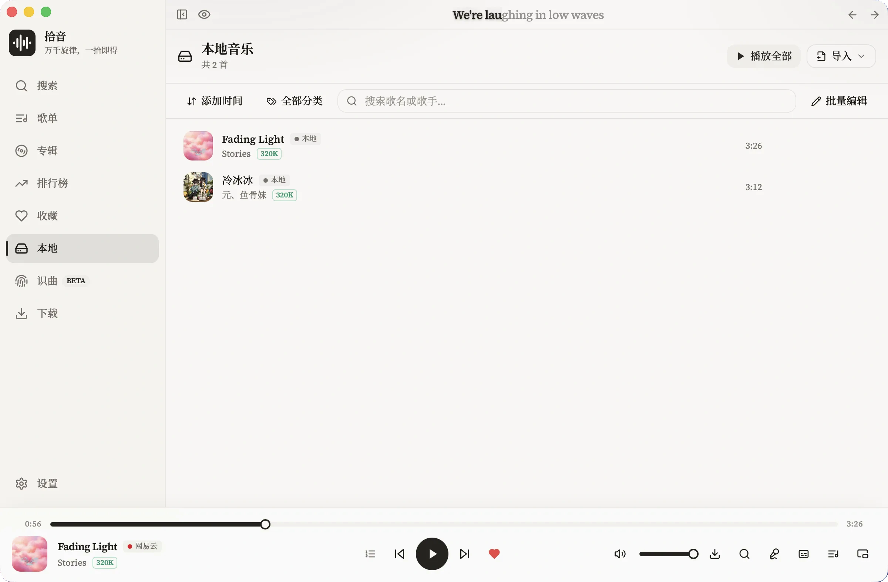
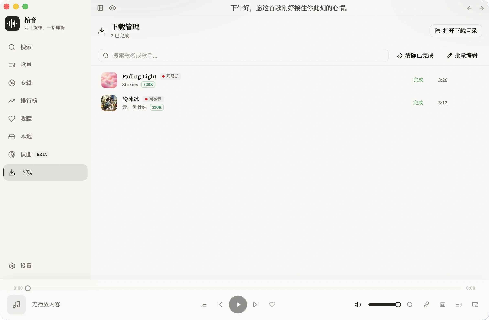
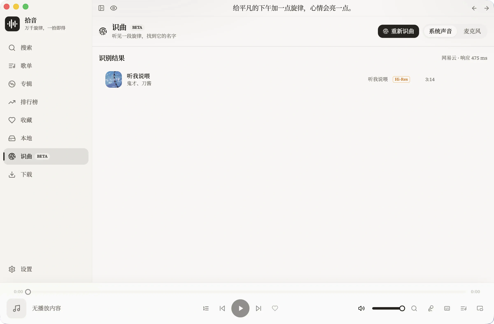

一个为桌面听歌设计的跨平台音乐工作台。从发现、播放到歌词、收藏、本地音乐与下载，把散落的音乐线索放回同一条清晰的工作流。
Museek 把搜索、播放器和个人音乐库放在同一个桌面上下文里，适合长时间使用，也适合快速找到一首歌。
在一个搜索入口里浏览歌曲、歌单、专辑和榜单，不必为每个平台重新建立习惯。搜索历史、热搜词与热门内容都在同一处。
队列、同步歌词、全屏歌词、桌面歌词和迷你播放器围绕当前歌曲展开，不打断听歌节奏。音质可自动降级以保证连续播放。
收藏单曲、歌单和专辑；导入本地文件与文件夹，也可以用 CUE 表把一张整轨专辑变成可单独播放的曲目。
以下界面截图来自 macOS 版本，保留原始比例，内容不被裁切。点击任意预览图可放大查看。








桌面软件应该让长时间使用变得安静。Museek 把复杂的来源、状态和设置收在该在的位置。
从歌曲、歌单、专辑或榜单开始，在熟悉的搜索结果里继续探索。
使用你自行导入的兼容音源解析播放链接，按优先级尝试可用来源。
队列、歌词、收藏和桌面控制围绕当前播放内容展开，下一步随手可达。
音源边界：播放和下载地址来自用户自行导入的 lx-music-compatible source scripts。Museek 不随应用分发、托管或提供音乐内容，请只导入你信任的音源脚本。
用熟悉的平台寻找内容，用自己的设置决定播放方式，最后回到一个统一的播放器体验。
从 GitHub Releases 获取最新版本。Museek 以 Tauri 2 构建，面向 Windows 与 macOS，开源且由你掌握配置。